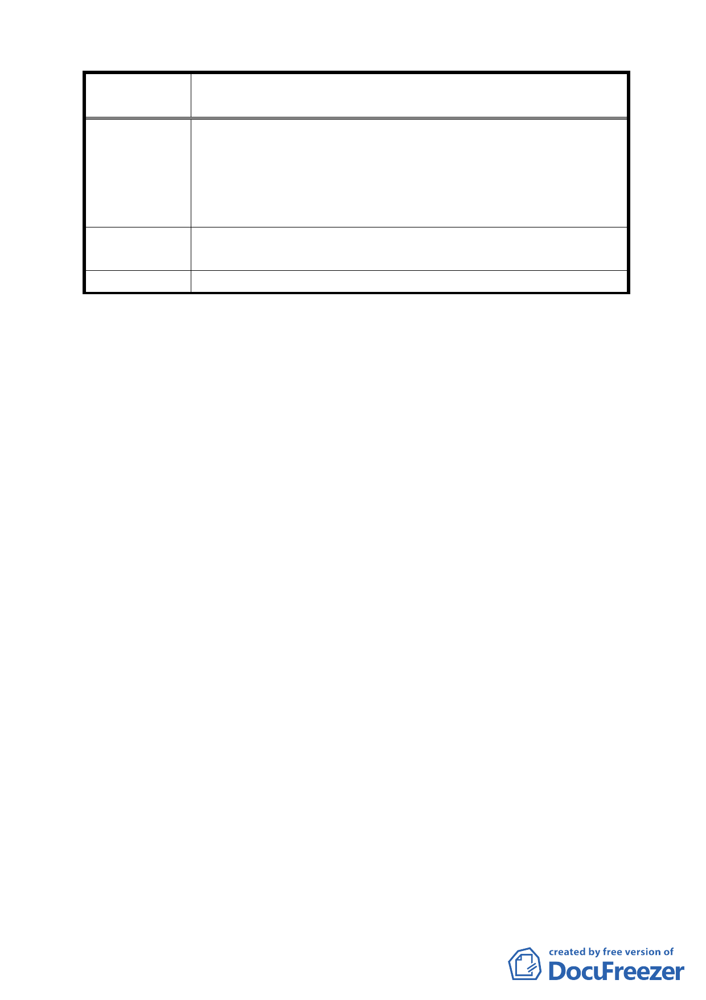

案
名
修訂臺北市信義區逸仙段 3 小段 294-4 地號第 4-1 種
住宅區（特）土地使用分區管制計畫案
感；有關修正變更內容第二項所示：本案基地沿仁愛路、光
復南路側應退縮 3.64 公尺之無遮簷人行道。悖逆現有法規
可設置騎樓之規定，侵害過往光復國小學童、行人及至國父
紀念館晨操之老人家遮陽蔽雨之權力。
建
議
辦
法
修正內容第二項改載：本案基地沿仁愛路、光復南路側需設
置騎樓。
委 員 會 決 議 維持原公展計畫。
討論事項五
案名：變更臺北市內湖區康樂街東湖聯外道路以北部分保護區為
道路用地計畫案
案情概要說明：
一、本件係市府以 96 年 4 月 19 日府都規字第 09630404403 號，
並自 95 年 4 月 19 日起公開展覽 30 天。
二、法令依據：都市計畫法第二十七條第一項第四款。
三、申請單位：臺北市政府（工務局水利工程處）。
四、計畫範圍：本計畫範圍包括康樂街於東湖聯外道路以
北至瓏山林橋北側（詳計畫書位置圖）。
五、計畫面積：約 840 平方公尺。
六、公民或團體所提意見：無。
七、本案變更理由係臺北市政府辦理「內溝溪中游段河道整治
工程」，基於防洪需求考量，須提升內溝溪瓏山林橋等橋面
高程。另為銜接提升後之橋面高程，內湖區康樂街之路面
高程須予配合墊高，考量前述路面高程位處保護區，且現
況已施作完成並作通行使用，為利銜接瓏山林橋等橋面高
程，符合長期使用計畫，須先完成由「保護區」變更為「道
路用地」之程序，方得辦理用地取得事宜（詳計畫書第 1、
14